오늘의 과제

박사주판봇의 베리에이션 여덟 장이다. 어디가 문제일까?
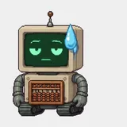
주판봇전부 열심히 만들었는데… 어디부터 봐야 할지 모르겠습니다.

초파리 연구원순서가 있어. 누구인지(고정값) → 무엇을 바꿨는지(축) → 몸과 나이 → 과장 → 재료·글자·출처.

시아순서대로 보면 처음 걸리는 곳이 고칠 곳이겠네요.
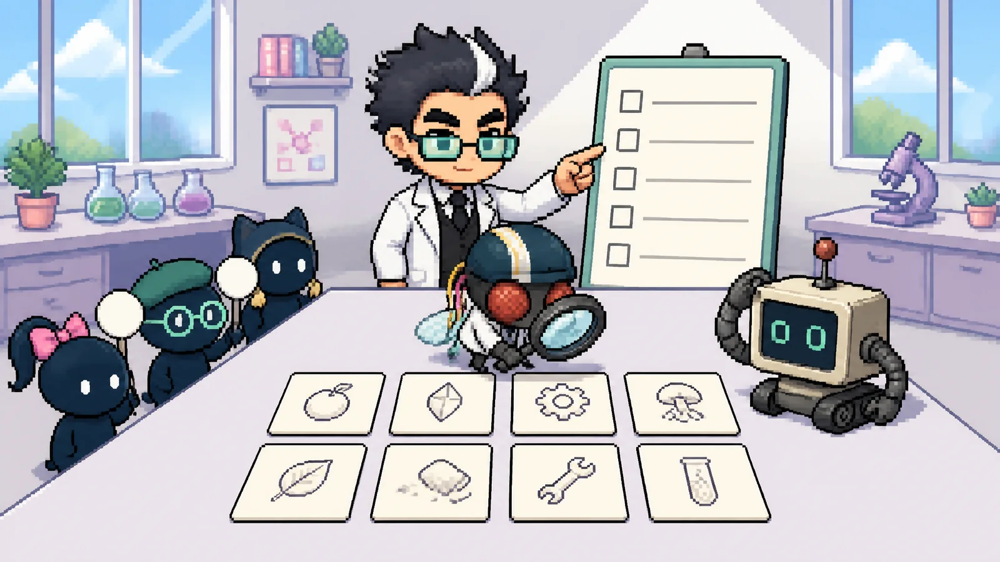
주판봇이 만든 베리에이션 여덟 장이 검수 책상에 올라왔습니다. 모두 어딘가 어색합니다. 초파리와 함께 다섯 항목 순서로 하나씩 짚어 봅니다.
그림 실력·코드·수식을 몰라도 됩니다. 실험을 눌러 보며 따라오세요.

정체성 고정값 → 바꾸는 축 → 등신·나이 → 과장 → 매체·글자·출처 순서로 점검합니다
요리가 맛없을 때 간부터 보고, 재료가 상했는지는 맨 나중에 보면 소금만 계속 넣게 됩니다. 재료부터 봐야 합니다.
그림 검수표는 대개 '캐릭터 일치 → 스타일 지정 → 비율 → 연기(표정) → 마감(글자·로고·권리)' 순서입니다. 앞에서 걸리면 뒤 항목은 다시 그린 뒤에 봅니다.


다섯 항목을 순서대로 보면 처음 걸리는 항목이 고칠 곳입니다.
고정값(①)에서 걸린 그림은 축·표정을 고치기 전에 고정값부터 다시 적습니다.
작업에서는 이 순서를 검수표로 두고, 다시 요청할 때는 처음 걸린 항목의 조각 하나만 더합니다.
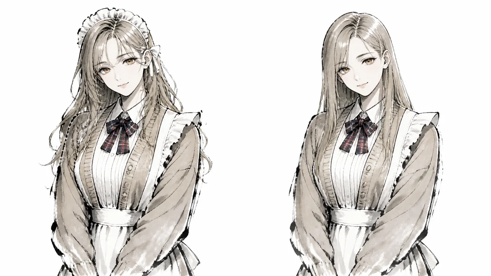
AI 베리에이션 열 장 중 세 장만 쓸 만합니다. 나머지를 한꺼번에 '더 잘 그려 줘'로 다시 요청해도 될까요?
막연한 다시 요청은 같은 실패를 되풀이합니다. 한 장씩 다섯 항목으로 진단해, 처음 걸린 항목의 조각만 넣어 다시 요청하세요.
그림마다 증상을 보고 처음 걸리는 점검 항목을 고른 뒤, 연결된 원리와 고치는 프롬프트 조각을 확인합니다.
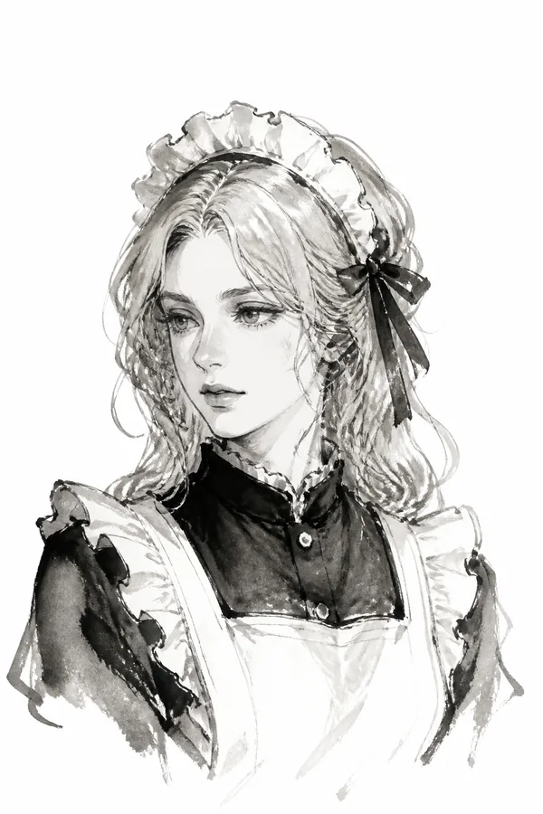
증상수묵풍 모아인데 머리띠와 리본이 없고 머리가 생머리로 바뀌어, 이름표가 없으면 누구인지 모른다.
연결된 원리6부 4단계 설정 시트
keep exactly: white frilled maid headband with a white ribbon over her LEFT ear, ash-beige wavy hair; only the rendering changes to ink brush style
실제 그림에서는 장식이 남고 머리색이 바뀌었습니다. 고정값 하나(머리색)만 빠져도 같은 실패라는 점은 같습니다.
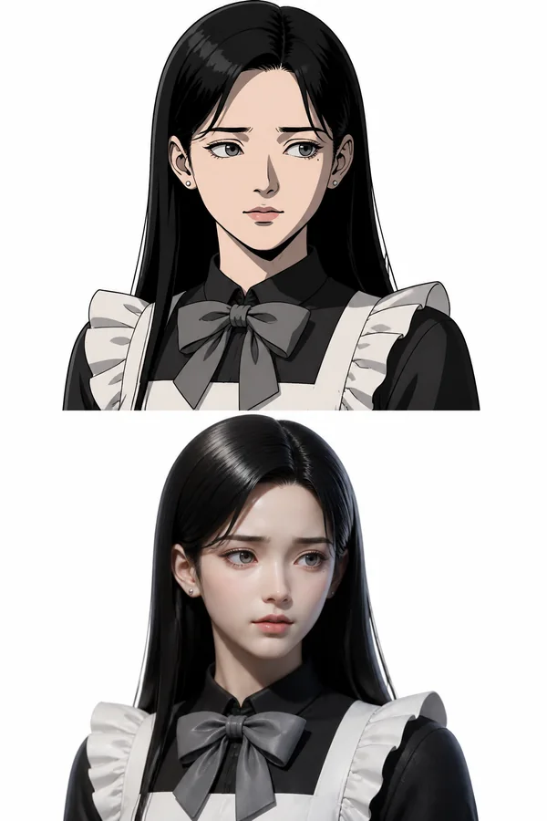
증상'80년대풍 + 3D 피규어'를 한 번에 요청해, 셀화의 굵은 선과 3D의 매끈한 명암이 섞인 그림이 나왔다. 비교할 기준이 없다.
연결된 원리목차 스타일 지도 — 축
Same image. Change only one thing: switch to 1980s cel shading (one hard shadow tone, one eye highlight). Keep the 2D drawing, no 3D rendering.
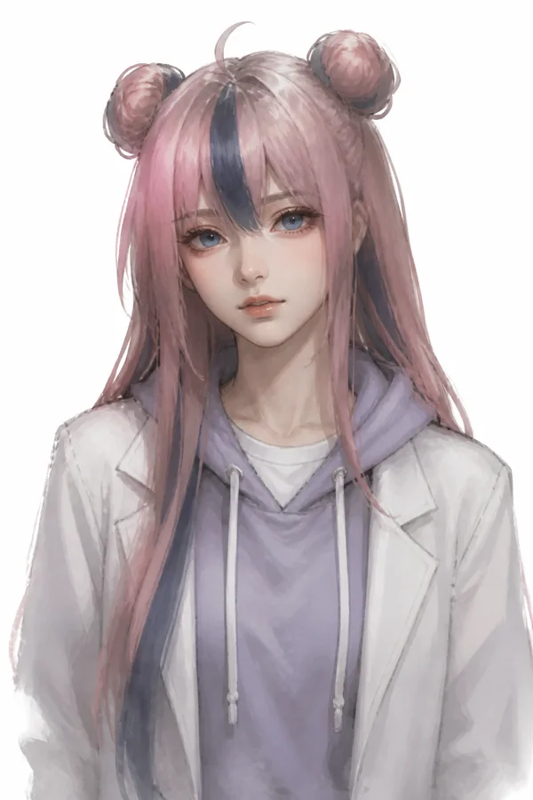
증상셀 애니도 수채화도 3D도 아닌 중간 질감이라 선은 흐리고 명암은 뭉개져 탁하다.
연결된 원리6부 1단계 재료
clean anime cel shading only: crisp outlines, two flat shadow tones, no watercolor texture, no 3D rendering
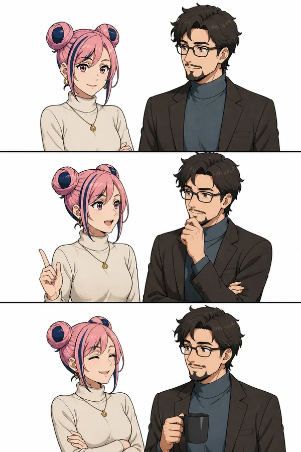
증상SD 하루가 성인 연구원이 아니라 어린아이처럼 보인다. 옷도 아동복 느낌이다.
연결된 원리4부 1단계 등신
an adult woman in her twenties drawn in 2.5-head-tall comedy SD style, not a child; adult face cues: slightly longer eye shape, a small visible nose line; adult-style lab coat and hoodie
이 그림은 요청과 전혀 다르게 나왔습니다. 어려 보이는 SD 모습은 4부 2단계 실험(부위 함께 줄이기를 끈 상태)에서 확인하세요.
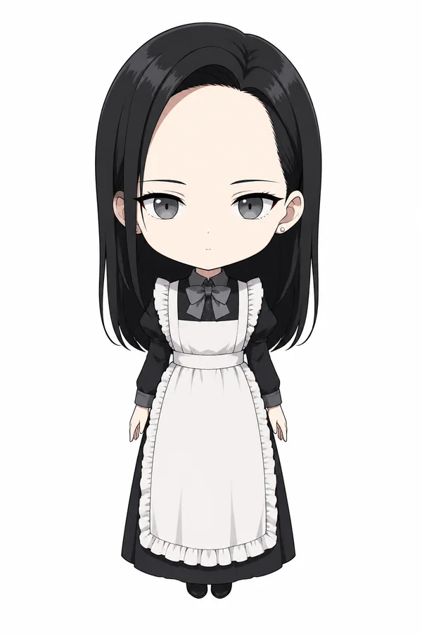
증상머리는 큰데 눈이 머리 한가운데에 있어 이마가 지나치게 넓고, 작은 손에 손가락 다섯 개가 빽빽하다.
연결된 원리4부 2단계 부위 함께 줄이기
SD proportions inside the face too: eyes placed low in the large head, small simple mitten-like hands
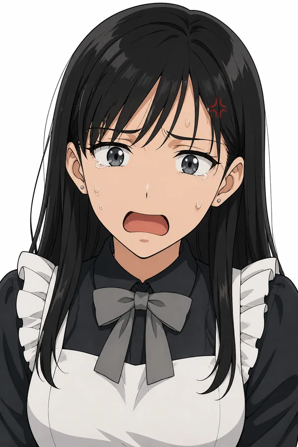
증상눈·입·땀·눈물·빛나는 눈·하트까지 모두 커서 놀란 건지 좋아하는 건지 모른다.
연결된 원리5부 2단계 한 곳 과장
only the eyes are exaggerated, everything else normal size; a single sweat drop symbol, no other symbols
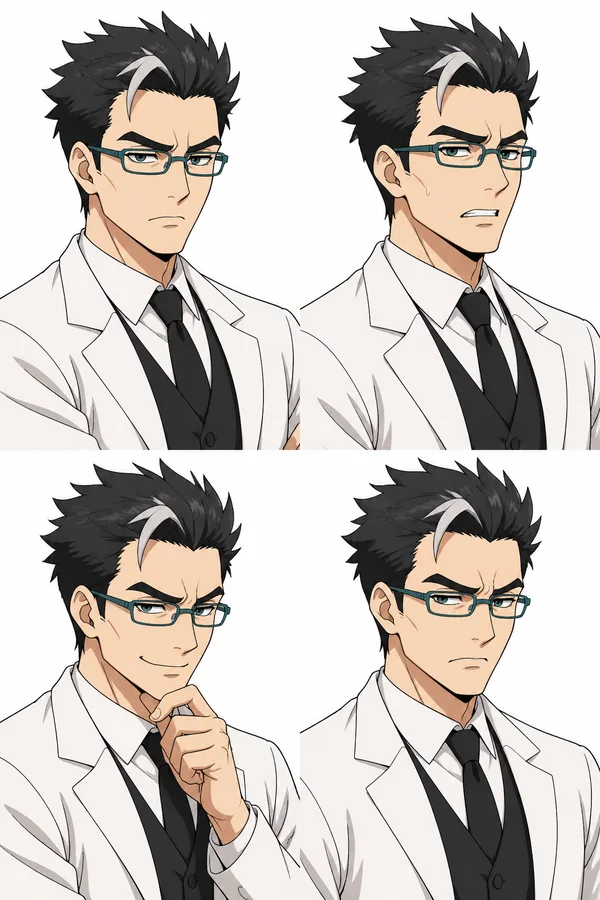
증상박사의 개그 얼굴인데 상황의 우스움이 아니라 코와 턱, 체형을 흉하게 바꿔 외모를 놀리는 것처럼 보인다.
연결된 원리5부 1단계 무너짐 단계
comedic reaction through expression only (dot eyes, big open mouth, shock lines); keep his face shape and body exactly the same, no mocking of appearance
도구가 외모를 놀리는 왜곡을 따르지 않았습니다. 이런 실패는 만들지 않는 것이 맞습니다 — 결과는 매번 다르니 직접 확인하세요.
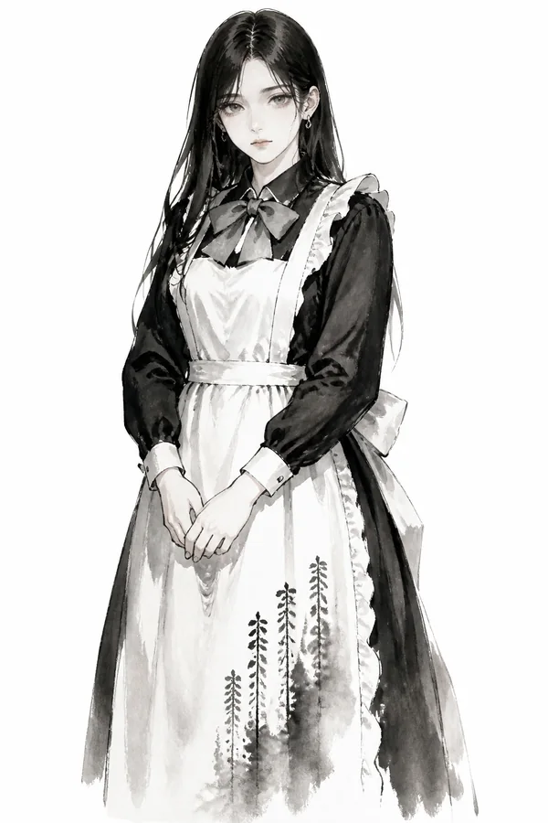
증상수묵풍 시아 옆에 뜻 없는 글씨와 도장이 있고, 요청문에 유명 작품 이름을 넣었더니 그 작품 캐릭터의 옷을 입고 있다.
연결된 원리3부 3단계 붓선과 여백
ink brush style described by features (broken brush lines, large empty space, bold black hair strokes); no calligraphy, no text, no seals; do not reference any existing artwork or character
참고 그림에 작가가 'AI 학습 금지'를 밝힌 경우 그 그림은 첨부하지 않고, 특징을 말로만 적습니다. 이번에는 가짜 글씨가 들어가지 않았습니다. 수묵풍 요청에서 가짜 글씨가 자주 들어가는 일은 참고 그림(AI 수묵 그림)에서 실제로 본 사례입니다. 결과는 매번 다르니 'no text, no seals'는 늘 넣으세요.
화풍을 요청할 때 유명 작품·작가·캐릭터 이름을 넣으면, AI가 화풍이 아니라 그 작품의 캐릭터와 옷을 따라 그리기 쉽습니다(f8). 또 남의 작품을 닮은 그림은 쓰는 곳에 따라 문제가 될 수 있습니다.
그래서 이 편의 모든 실습은 화풍을 특징으로 적습니다. 예: '80년대 셀화' 대신 'one hard-edged shadow tone, one eye highlight, heavy upper lashes, thick outlines', '유럽 모험 만화' 대신 'uniform line weight, flat colors, clean backgrounds'.
나이가 어려 보이는 쏠림은 얼굴 신호로 막습니다. 어린이 얼굴은 눈 높이가 머리의 아래쪽이고 눈이 크고 둥글며 코가 짧고 흐립니다. 성인 얼굴은 눈이 가로로 길고 조금 가늘며 코가 길고 또렷합니다. SD·큰 눈·둥근 볼을 쓸 때는 성인 신호 하나 이상(코 선, 가로로 긴 눈, 성인 옷)과 '20대 성인' 문장을 함께 넣습니다(4부 2단계, f4).
참고 그림에 작가가 'AI 학습·사용 금지'를 밝힌 경우에는 그 그림을 첨부하지 않고, 구도나 분위기를 말로만 설명합니다. 웃음의 대상은 상황과 캐릭터의 반응이며, 생김새·집단·실존 인물은 웃음의 대상으로 삼지 않습니다.
연결된 원리3부 3단계 붓선과 여백 · 6부 4단계 설정 시트
이 부에서 배운 원리를 그림 생성 AI(Genspark 등)로 직접 확인합니다. A는 이 페이지 그림을 실제로 만든 프롬프트, B는 원리를 하나 빼거나 바꾼 비교용 문장입니다.
참고 그림 내려받기: haru_anime_base · sia_anime_base · moa_anime_base · haru_sheet · sia_sheet · moa_sheet · doctor_sheet · fruitfly_sprites_6 · jupanbot_ref_genspark_v0 · pixel_style_ref_prev_cover
f1(장식이 사라진 수묵풍 모아)을 고정값 조각으로 고쳐 봅니다.
첨부: 해당 캐릭터 anime_base
Illustration, vertical 2:3. Art style: black ink brush painting, broken lines, large empty space; no calligraphy, no seals Match the attached reference images exactly for identity (hair shape and color, eye color, accessories). All characters are adults in their twenties (the Professor is an adult man in his thirties); modest outfits exactly as described. Only the drawing style changes between panels; the person stays the same. Intentional failure example. Chest-up ink brush painting of an adult woman who is supposed to be Moa, but the white frilled headband and the ribbon are missing and her wavy hair has become straight. Plain white background behind the panels. No text, no letters, no numbers, no calligraphy, no seals or stamps, no logos, no watermark, no revealing clothing, not childlike, no school uniform, not resembling any existing anime, comic or game character, do not imitate any specific artist or studio.
Same image, keep the same framing and the ink brush style. Change only: add her white frilled maid headband with the white ribbon over her LEFT ear, and make her hair ash-beige and wavy. Still no text, no calligraphy, no seals.
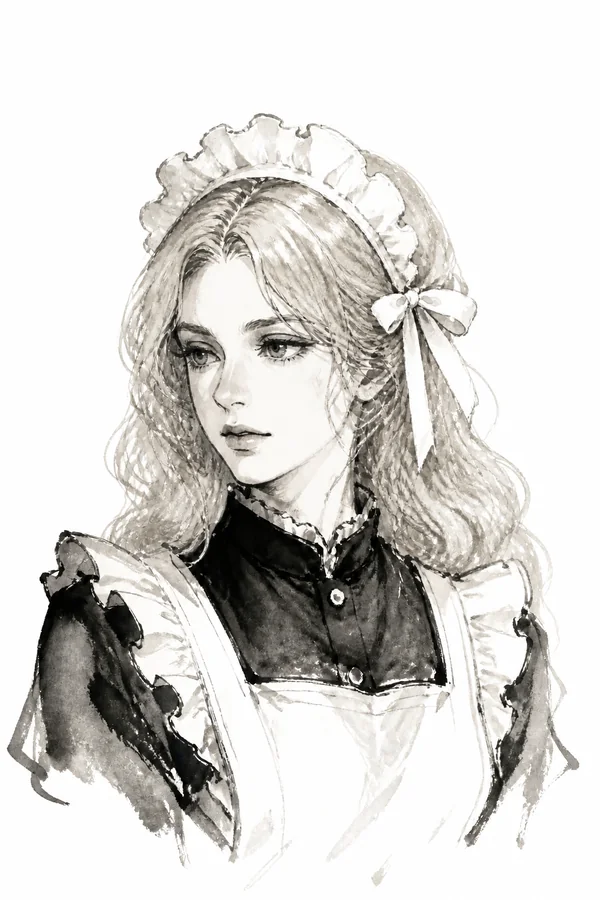
실제 결과: f1 실패 그림은 장식이 남고 머리색이 바뀐 모습으로 나왔고, 고친 그림에서는 리본 색만 흰색으로 바뀌었습니다. 머리색을 회갈색으로 돌리라는 부분은 반영되지 않았습니다.
f8(가짜 글씨·도장이 들어간 수묵풍 시아)에서 글씨를 없애고 특징으로만 화풍을 적어 봅니다.
첨부: 해당 캐릭터 anime_base
Illustration, vertical 2:3. Art style: black ink brush painting Match the attached reference images exactly for identity (hair shape and color, eye color, accessories). All characters are adults in their twenties (the Professor is an adult man in his thirties); modest outfits exactly as described. Only the drawing style changes between panels; the person stays the same. Intentional failure example. Ink brush painting of Sia (adult maid intern, long straight jet-black hair, no headdress, gray eyes, small silver earrings), wearing charcoal-black long-sleeved maid dress, large gray bow at the collar, long white frilled apron with meaningless pseudo-calligraphy columns and a red seal stamp beside her (this failure image intentionally includes fake writing). Exception for this failure image only: the pseudo-calligraphy and seal are allowed. Plain white background behind the panels. No text, no letters, no numbers, no calligraphy, no seals or stamps, no logos, no watermark, no revealing clothing, not childlike, no school uniform, not resembling any existing anime, comic or game character, do not imitate any specific artist or studio.
Same image, keep the same framing and the ink brush style. Change only: remove all calligraphy columns and the red seal stamp, leave that area as empty white paper. No text, no seals.
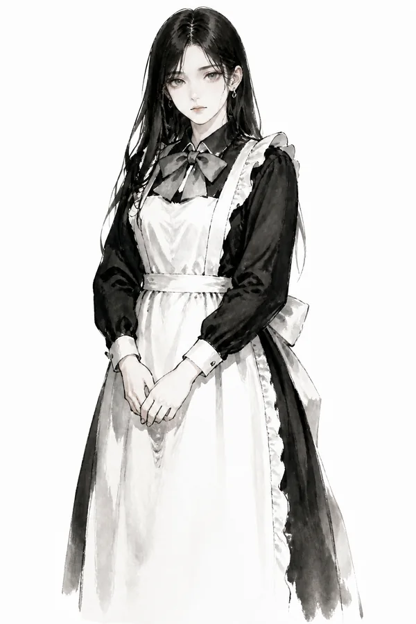
실제 결과: 실패 그림에 가짜 글씨가 처음부터 들어가지 않아, 고친 그림도 A와 거의 같습니다.
이 부의 원리를 내 손으로 프롬프트에 옮겨 보는 과제 3개입니다. 뒤의 과제일수록 1차 그림에서 실제로 겪은 문제(같은 대화에서 차이가 약함, 고정값이 쉽게 무너짐, SD가 어려 보임)를 피하는 방법을 담았습니다. 과제마다 목표 → 순서 → 넣을 프롬프트 → 확인할 것 → 예상 결과 → 자주 생기는 문제 순서로 적었습니다. 예상 결과 그림은 아래 프롬프트로 실제로 만든 그림입니다. 요청과 다르게 나온 곳은 '실제 결과'에 그대로 적었습니다. 결과는 매번 조금씩 다르니, 그림이 똑같지 않아도 '확인할 것'이 맞으면 성공입니다.
목표7부 실패 그림 중 하나를 골라 진단 순서로 처음 걸린 항목을 찾고, 그 항목의 조각 하나만 넣어 고칩니다. 여기서는 f6(과장 여러 곳)을 예로 듭니다.
왜 이 연습인가실패 그림을 '더 잘 그려 줘'로 다시 요청하면 같은 실패가 반복됩니다. 처음 걸린 항목의 조각 하나만 넣어야 무엇이 효과가 있었는지 알 수 있습니다.
첨부할 참고 그림: f6_overexag.png (실패 그림) + refs/sia_anime_base.png — 참고 그림은 위 직접 만들어 보기에서 내려받을 수 있습니다.
Same character and pose as the attached image. Change only: exaggerate the eyes only; mouth, sweat and everything else at normal size; remove all extra symbols except one small sweat drop. Keep her long black hair and small silver earrings. No text.
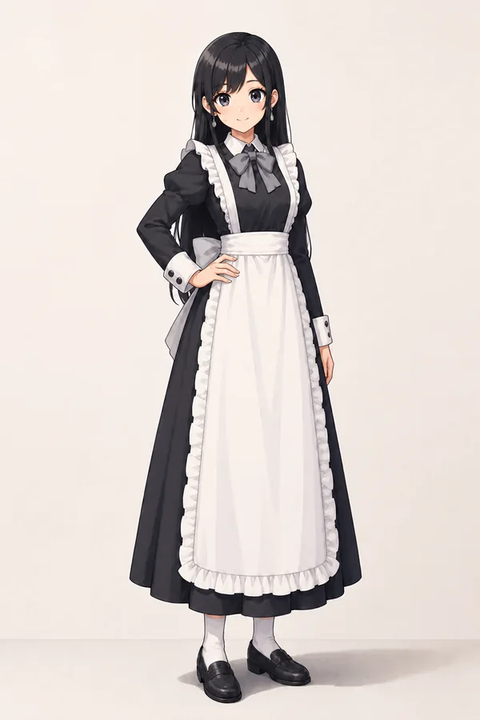
실제 결과: 실패. 과장은 사라졌지만 놀란 표정과 상반신 구도까지 함께 사라져 다른 그림이 됐습니다. '고칠 것 하나'만 적어도 도구가 첨부 그림을 그대로 쓰지 않으면 이렇게 됩니다 — 부분 수정(영역 칠하기)으로 기호만 지우는 편이 안전합니다.
| 문제 | 이렇게 고칩니다 |
|---|---|
| 기호가 그대로 남았다 | 부분 수정으로 기호 부분만 칠해 지웁니다. |
| 얼굴이 통째로 바뀌었다 | 실패 그림을 첨부했는지, 'Same character and pose'를 넣었는지 확인합니다. |
| 고친 뒤 다른 항목에서 걸린다 | 그 항목의 조각을 하나만 더합니다. |
더 해 보기f1·f4·f8도 같은 방법으로 고쳐 보고, 어느 항목의 조각이 가장 효과가 컸는지 적어 두세요.
목표1차에서 엉뚱하게 나온 f4(SD 나이 쏠림)를, 이번에는 '고친 쪽' 프롬프트로 만들어 SD지만 성인으로 보이는지 확인합니다.
왜 이 연습인가1차 f4 그림은 요청과 전혀 다른 3컷 만화가 나왔고, 4부 연습의 SD 하루는 성인 문장에도 어려 보였습니다. 나이 문장만이 아니라 성인 신호를 함께 적습니다(7부 나이 신호).
첨부할 참고 그림: refs/haru_anime_base.png — 참고 그림은 위 직접 만들어 보기에서 내려받을 수 있습니다.
Illustration, vertical 2:3. Art style: clean modern anime illustration, confident lineart, two-tone cel shading, natural adult proportions; adult face cues: eyes slightly longer horizontally and a bit narrower, a small visible nose line, calm confident smile; adult outfit: white knee-length lab coat over a lavender hoodie, slim dark trousers, low heels; she is an adult in her twenties, not a child Match the attached reference images exactly for identity (hair shape and color, eye color, accessories). All characters are adults in their twenties (the Professor is an adult man in his thirties); modest outfits exactly as described. Only the drawing style changes between panels; the person stays the same. Full-body figure of the adult woman Haru (adult lab assistant, long straight pink hair with navy streaks and a thick navy streak down the center of the bangs, two round hair buns on top, small ahoge, big blue eyes) drawn 2.5 heads tall in comedy SD style, standing confidently with a clipboard. Plain white background. No text, no letters, no numbers, no calligraphy, no seals or stamps, no logos, no watermark, no revealing clothing, not childlike, no school uniform, not resembling any existing anime, comic or game character, do not imitate any specific artist or studio.
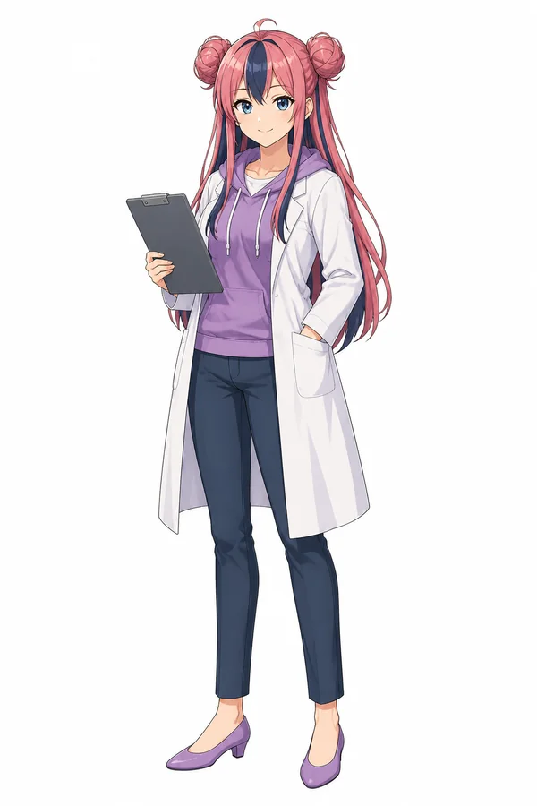
실제 결과: 부분 성공. 성인 신호를 적자 확실히 어른 연구원으로 보였지만, 대신 SD 비율이 사라지고 보통 비율이 됐습니다. 나이 신호와 SD를 함께 지키려면 'head is 40 percent of total height'를 더하세요.
| 문제 | 이렇게 고칩니다 |
|---|---|
| 여전히 어려 보인다 | 'no round baby cheeks, mature expression'을 더합니다. |
| SD가 아니라 보통 비율이 됐다 | 'head is 40 percent of total height'처럼 크게 과장해 적습니다. |
| 클립보드에 글씨가 생겼다 | 'blank clipboard, no text'. |
더 해 보기같은 프롬프트에서 성인 신호 문장만 빼고 새 대화에서 만들어, 신호의 효과를 비교해 보세요.
목표1차 f1(수묵풍에서 머리색이 바뀐 모아)을 부분 수정이 아니라 새 대화에서, 고정값을 맨 앞에 적어 다시 만듭니다.
왜 이 연습인가1차에서 f1을 부분 수정으로 고쳤더니 리본 색만 바뀌고 머리색은 그대로였습니다. 작은 수정이 잘 반영되지 않을 때는 새 대화에서 고정값을 먼저 적고 처음부터 만듭니다(7부 1단계).
첨부할 참고 그림: refs/moa_anime_base.png, refs/moa_sheet.png — 참고 그림은 위 직접 만들어 보기에서 내려받을 수 있습니다.
Illustration, vertical 2:3. Keep exactly first: Moa's wavy hair (in ink it is a mid gray wash, not white or blond), the white frilled maid headband and the white ribbon over her LEFT ear, her gentle face from the reference. Then change only the drawing style: black ink brush painting with broken brush lines and large empty white space, bold strokes for the hair. Plain white paper. No text, no letters, no numbers, no calligraphy, no seals or stamps, no logos, no watermark, no revealing clothing, not childlike, no school uniform, not resembling any existing anime, comic or game character, do not imitate any specific artist or studio.
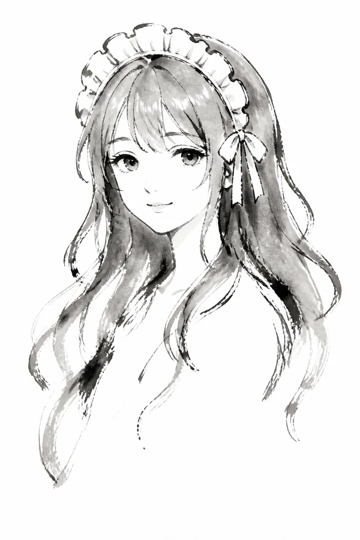
실제 결과: 성공. 1차 f1과 부분 수정으로는 안 되던 머리띠·리본·웨이브 머리가 새 대화에서 고정값을 먼저 적자 모두 남았습니다.
| 문제 | 이렇게 고칩니다 |
|---|---|
| 머리가 또 하얗다 | 'hair painted in mid-gray ink wash'를 맨 앞에 둡니다. |
| 리본이 오른쪽이다 | 'ribbon on her left side, which is the right side of the picture when she faces the viewer'. |
| 가짜 글씨가 생겼다 | 'no calligraphy, no seals'를 다시 넣습니다. |
더 해 보기1차 f1, 부분 수정한 f1, 이번 결과 세 장을 나란히 놓고 어떤 방법이 가장 효과가 있었는지 적어 두세요.
| 항목 | 주판봇 | 초파리 |
|---|---|---|
| 맞힌 처음 걸린 항목(8개 중) | 3 | 8 |
| 고치는 조각의 정확도 | 4 | 9 |
| 다시 요청 횟수의 적음 | 3 | 9 |
| 합계 | 10 | 26 |


점수는 이야기 속 예시입니다. 실제 그림을 평가한 값이 아닙니다.
| 주제 | 한 줄 | 작업에서는 |
|---|---|---|
| 진단 순서 | 고정값 → 축 → 등신·나이 → 과장 → 매체·글자·출처 | 처음 걸린 항목의 조각 하나만 더한다 |
| 실패 8종 | 장식 사라짐·두 축·탁함·나이 쏠림·SD 얼굴·과장 여러 곳·조롱·가짜 글씨 | 각 원리 단계로 되돌아간다 |
| 특징으로 적기 | 작품 이름 대신 선·명암·색·비율로 | AI 학습 금지 그림은 첨부하지 않는다 |
이 페이지에 나온 개념·방법·비유·쓰임을 모았습니다. 검색하고, "설명 보러 가기"로 본문에 돌아갑니다.
지식 색인을 출처와 함께 파일로 내려받습니다. 서지 관리는 BibTeX·RIS, 온톨로지 편집은 Turtle, 그래프 도구는 CSV, 여러 페이지 합치기는 kg.json입니다.